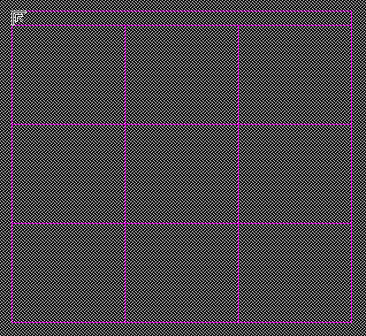
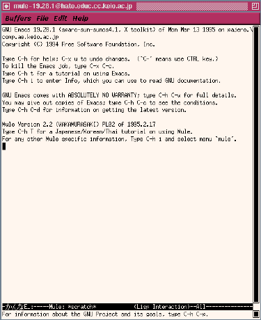
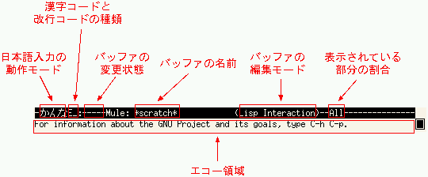
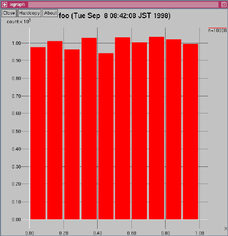
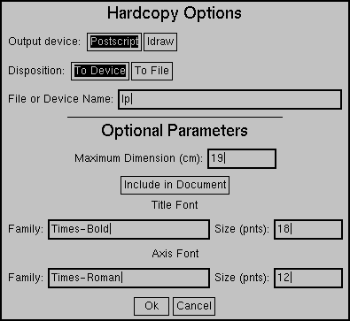
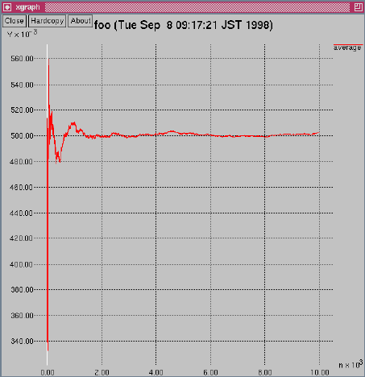

ここで課題の内容を確認します。課題は「Cの標準ライブラリーを用いて実際に乱数を発生し、その度数分布を調べよ。また、この一様乱数の平均、分散についても考察せよ。」です。では、どのようにプログラムを作成したらよいでしょうか。
一つのアプローチは、上のたくさんある要求を全部ミックスしたような、ごちゃごちゃして作った本人さえ正しく動くかどうかもわからないような、たった一つのプログラムを作ることです。
もう少しかしこいアプローチは、要求を分解することです。つまり、乱数を発生させるプログラム、度数分布を調べるプログラム、平均を調べるプログラム、分散を調べるプログラムの4つにわけてみる、ということです。そうすることで、それぞれは簡単で、間違いの混入しにくいプログラムとなるでしょう。
今回の実験では後者のアプローチをとります。そのためには、組み合わせて動作できるように、それぞれのプログラムの具体的な仕様（動作イメージ）を決めておく必要があります。
まず最初に、乱数を発生するプログラムを考えることから始めます。ここではそれをrandコマンドという名前で呼ぶことにします。randコマンドは、指定回数の乱数x（ただしxは0以上1未満）を標準出力に書き出す、という動作をするものとします。つまり、例えば指定回数が5回だったら、次のような動作をするものであると（頭の中で）イメージします。（下記の内容を入力しようとした人に注意。まだ作ってないコマンドを実行することはできません。上記の説明をよく読んでください。）
foo[bar]% ./rand 5 Enter0.5138700.1757410.3086520.5345340.947628foo[bar]% 次に度数分布を調べるプログラムにとりかかります。このプログラムはcountコマンドと呼ぶことにします。countコマンドは、値xを標準入力からなくなるまで読み込んで、指定された範囲にxの値があればカウンタの値を増加させていきます。そして入力が全部なくなったら、カウンタの値を表示して終了します。例えば、指定範囲が0.1以上0.2未満であるxの個数を求めるとして、次のような動作をするものであるとイメージします。
foo[bar]% ./rand 5 | ./count 0.1 0.2 Enter1foo[bar]% 5個の乱数のうち、0.1以上0.2未満のものは1つだけだったことを示しています。この例では、前述したrandコマンドの出力結果を、countコマンドの入力として渡した場合を想定しています。
最後に平均、分散を求めるコマンドを考えます。これらをそれぞれaverage、varianceコマンドと呼ぶことにします。これらのコマンドは、値xを標準入力から読み込んで、それぞれそのときの平均、分散を出力し、読み込むものがなくなったら終了するものとします。イメージ的には、次のような動作をするものと考えます。
foo[bar]% ./rand 5 | ./average Enter1 0.513870 ...1番目の乱数の平均2 0.344806 ...1番目と2番目の乱数の平均3 0.332754 ...1番目から3番目までの乱数の平均4 0.383199 ...1番目から4番目までの乱数の平均5 0.496085 ...1番目から5番目までの乱数の平均foo[bar]% ./rand 5 | ./variance Enter1 0.000000 ...1番目の乱数の分散2 0.028583 ...1番目と2番目の乱数の分散3 0.019346 ...1番目から3番目までの乱数の分散4 0.022143 ...1番目から4番目までの乱数の分散5 0.068687 ...1番目から5番目までの乱数の分散foo[bar]% やはりこの例でも、前述したrandコマンドの出力結果を、両方のコマンドの入力として渡した場合を想定しています。
平均を計算するプログラムは、次のような疑似コードで表現できます。
‘総和’ = 0;
‘加えた回数’ = 0;
while (‘値’ を入力から読み込むのに成功した?)
{
‘値’ を ‘総和’ に加える;
‘加えた回数’ を1つ増やす;
‘加えた回数’ と平均（‘総和’ / ‘加えた回数’）を出力する;
}
‘総和’, ‘加えた回数’, ‘値’ をそれぞれs, n, xと表記することにすれば、上記のコードはC言語では次のようになります。
s = 0;
n = 0;
while (x を入力から読み込むのに成功した?)
{
s += x;
++n;
n と (s / n) を出力する;
}
これでもいいのですが、これからわかるように、sとnが実際には独立した変数ではないことがわかります。つまり、sとnは同時に初期化され、sに値が加えられるとxが1つ増えるという関係があります。したがって、これらの変数を抽象的な1変数で表現した方が、扱いやすくなります。その変数をSummation型のsumとして、上記のコードを疑似コードで書き直してみます。
sumを初期化;
while (x を入力から読み込むのに成功した?)
{
sumにxを加える。
‘sumの加えた回数’ と ‘sumの平均’ を出力する;
}
sumに対する作用 ‘初期化’, ‘加える’ をそれぞれ関数ClearSummation(), AddSummaion()という形で表現し、sumから取り出せる値 ‘加えた回数’, ‘平均’ をそれぞれ関数CountOfSummation(), AverageOfSummation()という形で表現すれば、上記のコードは次のようになります。
ClearSummation(&sum);
while (x を入力から読み込むのに成功した?)
{
AddSummaion(&sum, x);
CountOfSummation(&sum) と AverageOfSummation(&sum) を出力する;
}
今回の実験では、これらのSummation型のデータ型の宣言や、Summation型を操作する関数を初めから用意してありますので、実際にこれらを作成する必要はありません。利用する上で、どのようにSummation型を実装してあるのか興味のある人は、付属のソースSummation.cとSummation.hを読んでみてください。
それでは方針が決まったところで、実際に作業を始めます。
ここの計算機センターでは標準でシェルがcsh（Cシェル）になっています。しかし、この実験のように対話的にシェルを使用する場合はtcsh（TCシェル）の方が劇的に使いやすくなっています。そこで、ktermで次のように入力してtcshを実行します。
foo[bar]% exec tcsh Enterfoo[bar]% （下線部分をドラッグしてマークしたあと、ktermにフォーカスをおいて、マウスの第2ボタンでペーストすることもできます。）
見ためには何も違いはありませんが、行の編集、入力履歴の再利用やファイル名の補完の機能などが追加されています。以降ではこれらの機能を随時紹介しながら作業を進めて行きます。
ここでは触れませんが、ログインする度にいちいち上記のような入力をしなくてもいいように、「ログインシェル」を変更することもできます。詳しくは参考文献をみてください。
次のようにpwdコマンドを入力して、現在自分がどこのディレクトリにいるか（カレントディレクトリ）を確認してください。
foo[bar]% pwd Enter（カレントディレクトリを表示する）/home/appi/foo ...カレントディレクトリが表示されます。人によって異なります。foo[bar]% もしカレントディレクトリがホームディレクトリと違っていたら、cdコマンドでホームディレクトリに移動します。（ホームディレクトリがどこか知らない人は、移動後にpwdコマンドで表示させ、覚えてください。）
foo[bar]% cd Enter（ホームディレクトリに移動する）foo[bar]% pwd Enter（確認のため）/home/appi/foo ...あなたのホームディレクトリになります。人によって異なります。foo[bar]% このホームディレクトリですべての作業を行うと、ファイルが散らばって面倒です。一般的には、一つのプログラムを作成するために、一つの作業用ディレクトリを準備します。そこで乱数の度数分布のプログラムを作成するためのディレクトリを次のように作ります。
foo[bar]% mkdir rand-distribution Enter
次にこのディレクトリに移ります。そのためには次のように入力しなければなりません。
foo[bar]% cd rand-distribution Enter ...実際に入力する前に下記を参照すること（以下同様）。このとき「rand-distribution」を全部タイプするのは面倒です。ここでtcshのファイル名補完機能を用いると、タイプ量を減らすことができます。次のように途中までタイプした後、Tab を入力（Tabと表記されたキーを押す）してみます。
foo[bar]% cd r Tab
すると次のように展開されます。
foo[bar]% cd rand-distribution/
あとはEnter を入力するだけで、タイプミスもなく簡単に入力できます（最後のスラッシュ ‘/’ はあってもなくてもいいので、消す必要はありません）。基本的にtcshを使用している場合、面倒だと思ったらTab を入力してみるといいでしょう。
もしTab を入力したときに「ピッ」と音がして何も展開されない場合は、名前がrで始まるファイルやディレクトリが他にいくつかあるはずです。その場合は次のようにControl-dを入力して、rで始まるものを表示します。
foo[bar]% cd r Control-drand-distribution/ resultfoo[bar]% cd rこの例では、「result」というファイルがホームディレクトリにあった場合を想定しています。このような場合、次のように「ra」までタイプしてからTab を入力すれば、
foo[bar]% cd r Control-drand-distribution/ resultfoo[bar]% cd ra Tab次のように展開されてうまくいきます。
foo[bar]% cd rand-distribution/
どちらにしろ、最後に念のためpwdコマンドでカレントディレクトリを確認します。
foo[bar]% pwd Enter/home/appi/foo/rand-distributionfoo[bar]% プログラムをゼロから作成するのは面倒なことです。この実験ではプログラムを何も準備してこなかった人のために、その雛型を用意してあります。その雛型を変更することで、比較的容易にプログラムを作成できるかもしれません。
ファイルのコピーにはcpコマンドを用います。次のように入力してファイルを自分のホームディレクトリにコピーします。
foo[bar]% cp ~yoshiko/skel/rand-distribution/* . Enterfoo[bar]% このときもtcshのファイル名補完機能を用いると、タイプ量を減らすことができます。次のように途中までタイプした後、Tabを入力します。
foo[bar]% cp ~yoshiko/s Tab
すると次のように展開されます。
foo[bar]% cp ~yoshiko/skel/
さらに途中まで入力し、
foo[bar]% cp ~yoshiko/skel/r Tabもう一段展開します。
foo[bar]% cp ~yoshiko/skel/rand-distribution/あとは「* .」だけを入力します。
ファイルをコピーしたら、念のためlsコマンドで確認してみてください。
それでは実際にプログラムを編集します。プログラムを編集するにはエディタと呼ばれるものを使います。今回の実験ではMule（多言語版Emacs）という名前のものを使います。
次のように入力してMuleを実行してください（最後に&を付けることに注意してください）。
foo[bar]% mule & Enterもし最後の&を付けずにEnter 入力した場合は、そのktermにフォーカスがある状態で、Control-zを入力します。すると次のようにシェルのプロンプトが表示されます。
^ZSuspendedfoo[bar]% そこでさらに続けて次のように入力してください。
foo[bar]% bg Enter
どちらにしてもNetscapeのときと同様に、ウィンドウマネージャが次のような枠を表示して、どこにMuleを配置するか聞いてくるので、適当な場所にマウスで移動させ、クリックして決定します。

決定すると、次のようにMuleが起動します。

Muleのウィンドウの一番上の部分には、マウスで操作できるメニューバーがあります。中央の領域は、バッファと呼ばれる編集対象の内容を表示、編集する編集領域です。下部に表示されている領域（反転表示されたモード行と最下部のエコー領域）は次のようなことを表しています。

今回の実験で、このうち重要なのはバッファの名前と、エコー領域だけです。それぞれについての詳細を知りたい人は参考文献を読んでください。
Muleにコマンドを入力するには、バッファにフォーカスがある状態で、特有な表記のコマンドを入力します。例えばMuleを終了させるコマンドはC-x C-cと表記されますが、これは次のことを意味しています。
C-xとC-cの間にスペースは入れません。なお、実際にはControl-xとControl-cの間にコントロールキーを離して押し直す必要はなく、押し続けたままでx、cと押しても同じことになります。
また、M-xと表記されたコマンドは、Meta-xを入力（メタキーを押しながらxを入力）することを意味しています。もしキーボードにメタキーがない場合は、代わりに次のようにしてM-xを入力することもできます。
キーを押し間違えてなにか間違ったコマンドを入力してしまい、Muleがおかしくなってしまったときは、とにかくC-gを入力します。これを入力すると、エコー領域に
Quit
と表示されて元の状態に戻ります。もしこのコマンドを入力してもMuleがおかしいままなら、教員やTAに相談してください。
前置きが長くなりましたが、それでは実際にファイルrand.cを編集してみます。現在、バッファの名前は*scratch*と表示されているはずです。そこでC-x C-fを入力します。するとエコー領域に
Find file: ~/rand-distribution/▮
と表示され、カーソルがエコー領域に移動します。
あとはrand.cとタイプすればいいのですが、Muleはtcshのようにファイル名補完機能をもっています。そこで
Find file: ~/rand-distribution/r▮ Tab
と入力してみると、
Find file: ~/rand-distribution/rand.c▮
と展開されます。あとはEnterを入力するだけです。
ファイルrand.cが読み込まれると、バッファの名前が*scratch*からrand.cになるなどモード行の表示が変化し、カーソルは編集領域に戻ります。
バッファの内容を編集するには、変更したい箇所にカーソルを移動させ、キーボードから入力します。カーソルを上下左右に移動させるには、対応する方向の矢印キーを押す（矢印キーが使えない場合はC-p, C-n, C-b, C-fがそれぞれ上下左右に対応します）か、その箇所をマウスでクリックします。
文字を消去するにはC-dかDeleteを入力します。C-dはカーソルの右側の一文字を消去します。Deleteは左側の一文字を消去します。
Muleは間違いなく世界一高機能なエディタであり、今回説明する機能以外にも、覚えきれないほどの数々の便利な機能が用意されています（それゆえ複雑で巨大なものになっているという欠点もあります）。今後もワークステーションを利用したり、プログラムを作成する人は参考文献を読んで実践的な機能を修得することをお勧めします。
バッファの内容をファィルに書き込むには、C-x C-sを入力します。書き込まれるとエコー領域に
Wrote ~/rand-distribution/rand.c
と表示されます。バッファの内容を変更しても、このコマンドを入力しなければ、ファイルの内容に変更が反映されないことに注意してください。
Muleを終わらせるには、C-x C-cを入力します。今回の実験では、基本的に実験終了までMuleを実行したままの方が便利です。
rand.cだけではなく、残りのファイル（count.c, average.c, variance.cなど）も編集します。
作成したプログラムをコンパイルします。今回の実験ではgccというCコンパイラを使います。
作成した4つのプログラムのうちの一つ、例えばrandコマンドを作成するにためは、ktermで次のように入力します。
foo[bar]% gcc -o rand rand.c Enter
入力後、ファイルrand.cがコンパイルされて、実行ファイルrandを得ることができます。しかし、普通は上記のような方法をとりません。
プログラムの開発では、「編集しコンパイルする」という作業が一回で済むことはまれです。コンパイルでエラーがでたり、あるいはコンパイルはエラー無しで通っても実行した結果が意図通りでないことが多いので、編集とコンパイルは何度も繰り返されるのが普通です。本来の用途とは少し異なりますが、ここではタイプを減らすためにmakeコマンドを使います。
makeコマンドは、カレントディレクトリにあるMakefileというファイルの内容にしたがって、プログラムを作成するコマンドを自動的に実行してくれます。今回は時間の関係でMakefileの内容については説明しませんが、それほど難しいものではないので計算機でプログラムを作ることに興味のある人は参考文献を読んでみてください。
実際にmakeで構築するには、ktermで次のように入力します。
foo[bar]% make Enter
プログラムに間違いがなければ次のように出力され、自動的に4つの実行ファイルrand、count、average、varianceが構築されます。
foo[bar]% makegcc -Wall -O2 -pipe -D__USE_FIXED_PROTOTYPES__ -c rand.cgcc -o rand rand.o -lmgcc -Wall -O2 -pipe -D__USE_FIXED_PROTOTYPES__ -c count.cgcc -o count count.o -lmgcc -Wall -O2 -pipe -D__USE_FIXED_PROTOTYPES__ -c average.cgcc -Wall -O2 -pipe -D__USE_FIXED_PROTOTYPES__ -c Summation.cgcc -o average average.o Summation.o -lmgcc -Wall -O2 -pipe -D__USE_FIXED_PROTOTYPES__ -c variance.cgcc -o variance variance.o Summation.o -lmfoo[bar]% 間違いや（コンパイラにとって）怪しい部分が検出されると、次のように表示されます。
foo[bar]% makegcc -Wall -O2 -pipe -c ファイル名: In function ‘関数の名前’::行: warning: 警告の内容:行: エラーの内容foo[bar]% このような場合はエラーや警告の内容を調べ、Muleで修正し、もう一度makeしてみます。
正常に構築できたようであれば、次に進みます。
ktermで次のように入力します。
foo[bar]% ./rand 5 Enter
正常にプログラムができていれば、次のように乱数が5つ表示されます（乱数の値は異なるかもしれません）。
foo[bar]% ./rand 50.5138700.1757410.3086520.5345340.947628foo[bar]% 正常に動作しなかったり、値がめちゃくちゃだったりした場合は、Muleで修正して再びmakeします。
次のように入力し、正しい値が表示されるかチェックします。
foo[bar]% ./rand 5 | ./count 0.1 0.2 Enter
また範囲をいくつか変えて確認してみてください。
averageコマンドに関しては、次のように入力し、正しい値が表示されるかチェックします。
foo[bar]% ./rand 5 | ./average Enter
varianceコマンドについては、最初の3つくらいで確認してみてください（手で検算するには大変です）。
foo[bar]% ./rand 3 | ./variance Enter
例として10000個の（0以上1未満の）乱数の度数分布を考えてみます。もし、そのうち0以上0.1未満の範囲にある乱数の個数はと尋ねられたら、たぶん1000個くらいだろうと答えることができます。おそらく0.1以上0.2未満の乱数の個数も、0.2以上0.3未満の個数も、そして同様に0.9以上1.0未満の個数もそうなるでしょう。そこでこれらのことを実際に試してみます。そのためには次のようにコマンドを入力すればよいことがわかると思います。
foo[bar]% ./rand 10000 | ./count 0.0 0.1 Enter975 ...10000個の乱数のうち0.0以上0.1未満のものは975個だったfoo[bar]% ./rand 10000 | ./count 0.1 0.2 Enter1010 ...10000個の乱数のうち0.1以上0.2未満のものは1010個だった...もちろん、これらの値を紙に写してグラフ用紙にプロットして、度数分布グラフを描くこともできます。今回は、グラフを作成するためのシェルスクリプトbargraph.shを用意してありますので、これを利用します。
ktermで次のように入力すればグラフを作成することができます。
foo[bar]% sh bargraph.sh 試行回数 Enter
もし試行回数が10000回ならば、次のように入力します。
foo[bar]% sh bargraph.sh 10000 Enter入力後、シェルスクリプトからxgraphというグラフ表示用のアプリケーションが呼び出されます。ウィンドウマネージャが次のような枠を表示して、どこにxgraphを配置するか聞いてくるので、適当な場所にマウスで移動させ、クリックして決定します。
決定すると次のようなxgraphのウィンドウが現れます。

グラフを印刷するには、xgraphのウィンドウの左上にある領域 をクリックします。すると次のようなウィンドウが現れます。

今回の実験では、そのままウィンドウ下部の領域 をクリックしてください。しばらくすると計算機室のプリンタに出力されます。
xgraphのウィンドウの左上にある領域 をクリックすると、xgraphは終了します。
乱数の平均値が試行回数nが増加するにしたがってどのように収束するか、グラフにプロットしてみます。これについてもシェルスクリプトgraph.shが用意してあります。試行回数が10000回ならば、ktermで次のように入力します。
foo[bar]% ./rand 10000 | ./average | sh graph.sh -0 average Enter
度数分布グラフのときと同様に次のようなウィンドウが現れます（最後の「-0 average」は、ウィンドウの右上にあるレジェンドの指定になります）。

平均値が収束している様子を確認したら、印刷して終了します。
また、試行回数10000回目での乱数の平均を数値で知りたい場合は、次のように入力することで知ることができます。
foo[bar]% ./rand 10000 | ./average | tail Enter9991 0.5025059992 0.5024889993 0.5024679994 0.5024359995 0.5024429996 0.5024509997 0.5024549998 0.5024379999 0.50247710000 0.502515foo[bar]% 同様に、乱数の分散についても同様なグラフを作成します。ktermで次のように入力します。
foo[bar]% ./rand 10000 | ./variance | sh graph.sh -0 variance Enter
分散が収束している様子を確認したら、印刷して終了します。
また、試行回数10000回目での乱数の分散を数値で知りたい場合は、次のように入力することで知ることができます。
foo[bar]% ./rand 10000 | ./variance | tail Enter9991 0.0831769992 0.0831719993 0.0831679994 0.0831699995 0.0831619996 0.0831539997 0.0831459998 0.0831409999 0.08314710000 0.083154foo[bar]%